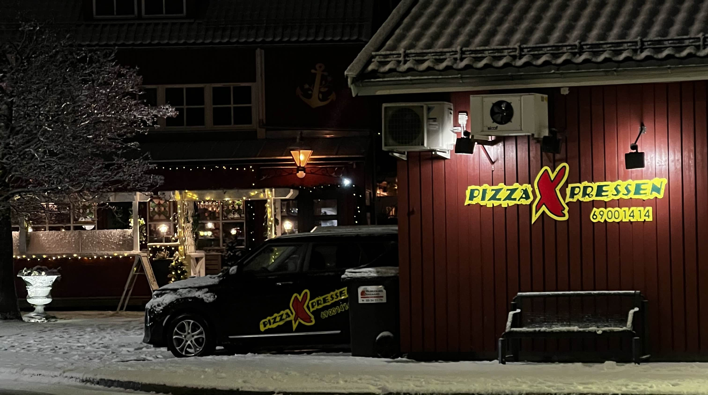
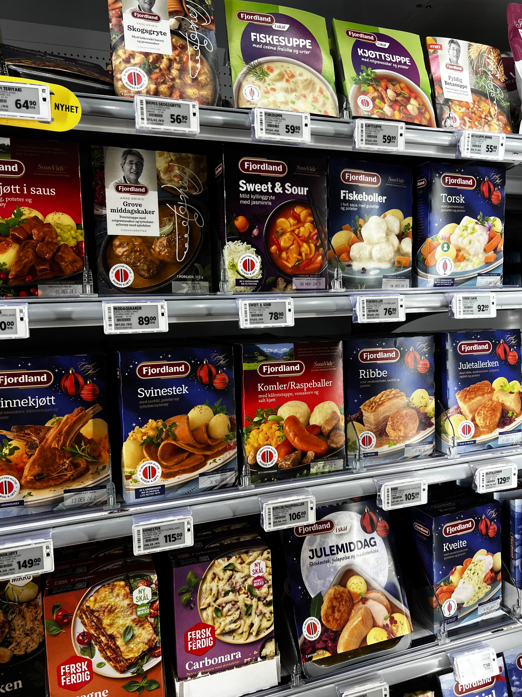
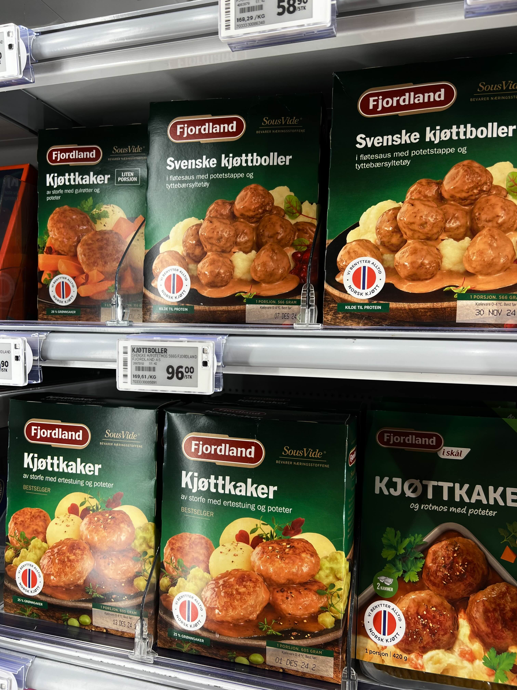
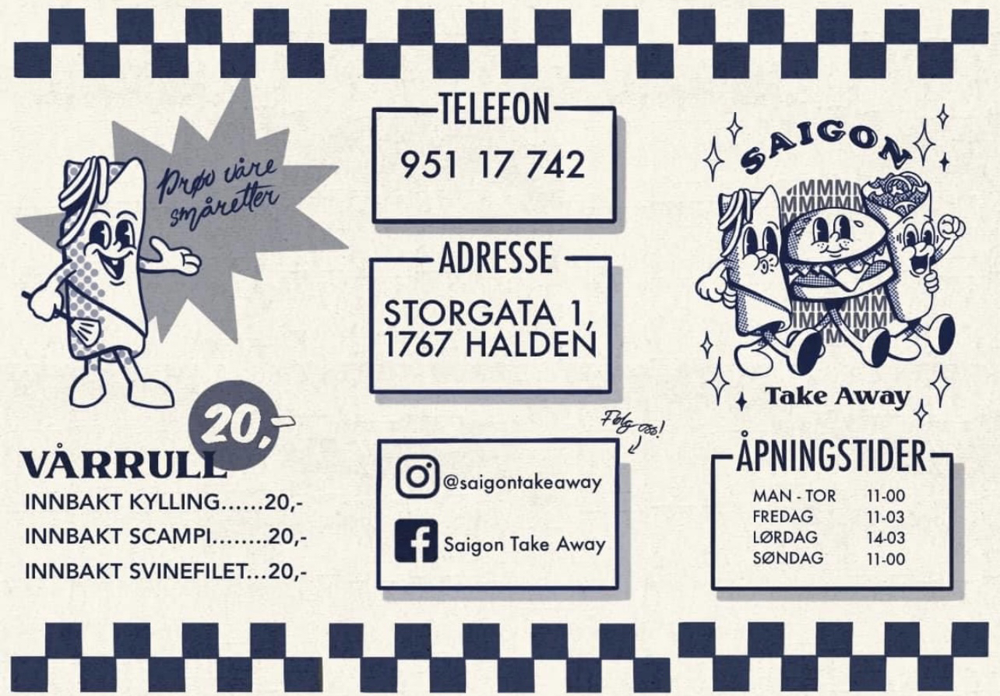
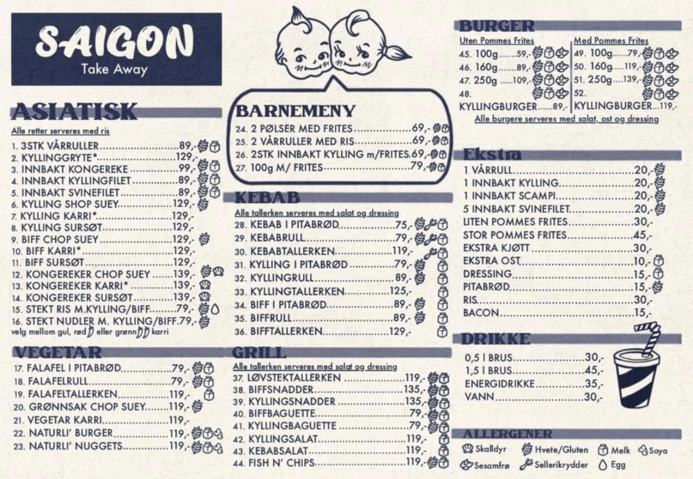
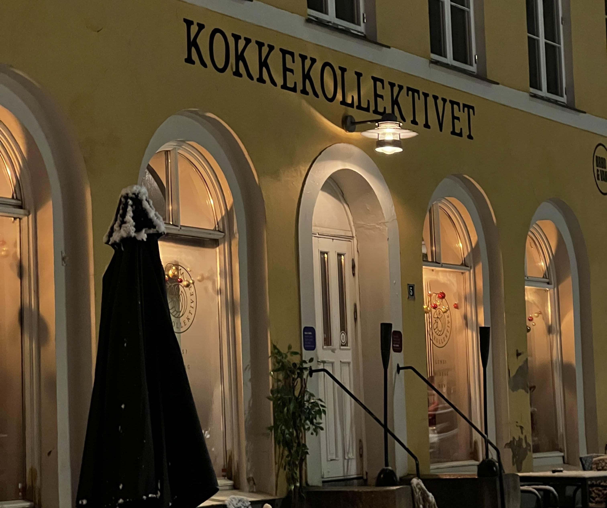
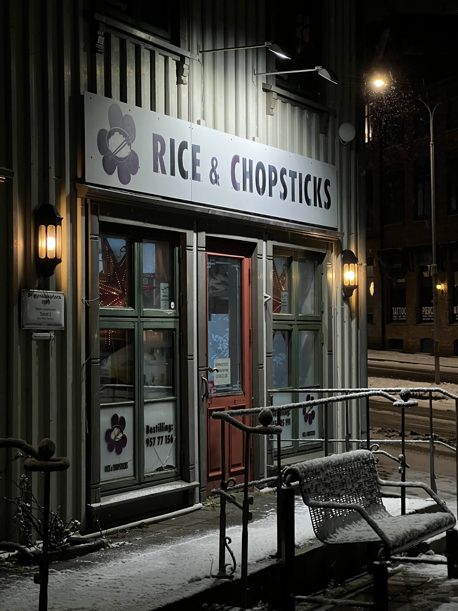

Er norsk mat i fare? Kan norsk matkultur reddes?
Foto: Frida
Norge, med sine fjorder, fjell og en rik historie, har en matkultur like mangfoldig som landskapet selv. Fra tradisjonelle retter som fårikål og kjøttkaker til moderne impulser fra det globale kjøkkenet, har maten vår alltid vært i utvikling. Men i møte med internasjonale trender, travle hverdager og raske måltidsløsninger, hva skjer egentlig med de norske mattradisjonene? Er de på vei til å forsvinne, eller kan de gjenoppdages og revitaliseres i en ny tid?
En undersøkelse fra Statistisk sentralbyrå viser at stadig færre nordmenn lager tradisjonsmat jevnlig, mens retter som sushi, kebab og street food har funnet sin plass i hverdagen. Det som en gang ble servert på norske middagsbord handlet om tradisjon og lokale ingredienser, men nå former globalisering og reiselyst stadig mer hva nordmenn setter på tallerkenen. Et sted på veien gikk poteten og kålen fra å være ukens hovedingredienser til noe vi bare møter i bestemor sitt kjøkken. Nylig viste en studie at bare 23 % av nordmenn tilbereder norske tradisjonsretter jevnlig, mens asiatisk mat, med sushi i spissen, har funnet sin vei inn på 56 % av norske kjøkken minst én gang i måneden. Hvordan skjedde denne overgangen fra fårikål til fisk på ris, og kan vi bevare det norske i møtet med nye smaker? Tid og praktikalitet kan være noen av de viktigste årsakene til at klassiske norske retter, som fårikål og kjøttkaker, gradvis forsvinner fra hverdagsmenyen. Tora Lien, forsker ved SIFO, påpeker at den moderne matlagingen i dag handler om hurtighet og tilgjengelighet: “Det krever både kunnskap og tålmodighet å lage tradisjonsmat, og mange ser ikke nødvendigvis på disse rettene som like praktiske i en hektisk hverdag.” Selv om det norske kjøkkenet nå er et smakfullt fusjonspunkt av gamle tradisjoner og nye matvaner, er det mange som ønsker å holde fast ved det norske. Med initiativer som "Fårikålens dag" og et økt fokus på bærekraftige valg, ser fremtiden lys ut for norsk matkultur, både på nostalgiske og moderne måter. Mat er mer enn bare næring – det er en del av vår identitet og historie. Tradisjonelle retter representerer århundrer med kunnskap, lokal tilpasning og kulturarv. I en tid hvor matkulturen preges av raske trender, er det viktig å reflektere over hvordan vi kan bevare essensen av det norske kjøkkenet.
Foto: Frida
Fra tradisjon til transformasjon
Tradisjonell norsk mat springer ut av landets historie og geografi. Fra fisk langs kysten til kjøtt og melkeprodukter fra fjell og daler, har matkulturen vært en refleksjon av hva naturen har å tilby. Retter som fårikål, rømmegrøt, lutefisk og kjøttkaker har i generasjoner vært en del av norsk identitet, ofte laget av lokale råvarer i enkle, men smakfulle oppskrifter. I dag er situasjonen annerledes. En undersøkelse fra Statistisk sentralbyrå viser at bare 23 % av nordmenn tilbereder tradisjonell norsk mat jevnlig. Samtidig spiser hele 55 % asiatiske retter som sushi minst én gang i måneden, mens kebab og annen street food også har funnet en fast plass i kostholdet. Poteten, en gang en grunnstein i det norske kostholdet, har for mange blitt erstattet av ris, nudler og tortilla. Denne endringen er del av en større global trend. Matkultur er i konstant utvikling, men for Norge, med sine unike tradisjoner og et relativt lite kjøkken i internasjonal målestokk, reiser dette spørsmål om hva som kan gå tapt.
Foto: Frida
Hvorfor forsvinner tradisjonsmaten?
Det finnes flere årsaker til at norsk tradisjonsmat har fått en mindre rolle på middagsbordet. Den mest åpenbare er kanskje tid. Tradisjonelle retter som fårikål eller lutefisk krever timer, og ofte dager, med forberedelse. Dette passer dårlig i en hektisk hverdag der hurtigmat og ferdigretter dominerer.
Foto: Frida
Hvorfor hurtigmat utfordrer norsk tradisjonsmat
Hurtigmatprodukter som Fjordland representerer en praktisk løsning for mange, men dette har konsekvenser for norsk tradisjonsmat. Den høye tilgjengeligheten og enkelheten i ferdigretter gjør at færre lager tradisjonelle norske måltider fra bunnen av. Tradisjonsretter som fårikål, lapskaus og kjøttkaker, som ofte krever tidkrevende tilberedning og kjennskap til gamle oppskrifter, risikerer å forsvinne fra norske middagsbord. Når raskere alternativer prioriteres, reduseres kunnskapen og interessen for de rettene som i generasjoner har vært en del av norsk kulturarv. Dette kan også føre til en svekkelse av identiteten som ligger i matkulturen. Tradisjonsmat handler ikke bare om smak, men også om historie, håndverk og lokal tilhørighet. Når slike retter erstattes med ferdigløsninger, mister vi en viktig del av vår kulturelle arv.
Foto: Frida
Hvorfor det kan være positivt
Samtidig har ferdigmatprodukter som Fjordland også positive sider. For mange travle familier og enkeltpersoner er dette en måte å få servert retter som kjøttkaker eller lapskaus, selv om de ikke har tid til å lage dem fra bunnen av. Fjordland og lignende produsenter inkluderer ofte norske råvarer og tradisjonelle smaker i sine produkter, noe som kan bidra til å bevare deler av matkulturen i en moderne form. I tillegg kan hurtigmatens popularitet åpne opp for innovasjon. Tradisjonsmat kan tilpasses nye formater og pakkeløsninger som gjør den mer tilgjengelig. Hvis produsentene fortsetter å fokusere på kvalitet, bærekraft og autentiske smaker, kan det bidra til å holde norske retter relevante i en tid der matvanene endres raskt.
Foto: Frida
Balansen mellom tradisjon og modernitet
Utfordringen ligger i å finne en balanse. Norsk tradisjonsmat kan revitaliseres gjennom moderne innovasjon og økt tilgjengelighet, samtidig som vi oppmuntrer til å lage disse rettene hjemme. På denne måten kan hurtigmat fungere som en bro mellom fortid og nåtid, og bidra til å bevare essensen av det norske kjøkkenet i møte med en travel hverdag. Forsker Tora Lien ved SIFO peker på hvordan tidspress og manglende kunnskap spiller en rolle. «Det krever både kunnskap og tålmodighet å lage tradisjonsmat, og mange ser ikke nødvendigvis på disse rettene som like praktiske i en travel hverdag,» forklarer hun. Dessuten har matkulturen blant unge endret seg. En undersøkelse viser at 70 % av nordmenn under 30 år aldri har laget fårikål fra bunnen av. I tillegg handler det om smak og preferanser. Globalisering har gjort det enklere enn noen gang å få tilgang til råvarer fra hele verden. Sushi, taco og thaimat har blitt tilgjengelig både i butikkene og på restauranter, og de appellerer ofte mer til yngre generasjoner enn de tungere, mer tradisjonelle rettene.
Foto: Frida
Hva serveres på norske utesteder?
Mat som typisk blir servert på utesteder er langt fra tradisjonell norsk mat. Burgere og asiatisk er blant de mest vanlige sortene en finner. Når du leser disse menyene, er der noe du kjenner igjen som norsk?
 Foto: Frida
Matkultur som identitet
Mat er langt mer enn næring. Det er en del av vår identitet, en måte å uttrykke hvem vi er, og hvor vi kommer fra. Norske tradisjonsretter forteller historier om hvordan folk overlevde harde vintre, hva som var tilgjengelig lokalt, og hvordan man skapte samhold rundt matbordet. I dagens globaliserte samfunn blir disse historiene stadig mindre synlige. Når hurtigmat og globale trender tar over, risikerer vi å miste noe av den kulturelle arven som tradisjonsmaten representerer. Det er en balanse som må finnes mellom å være åpen for nye impulser og samtidig bevare det som gjør den norske matkulturen unik.
Foto: Frida
Intervju om norsk tradisjonsmat og moderne matvaner
For å få et innblikk i hvordan nordmenn forholder seg til tradisjonsmat og dagens mattilbud, intervjuet vi en ung kvinne bosatt i Norge om hennes oppfatninger og matvaner. Samtalen ga oss interessante perspektiver på både norsk matkultur og trender innen utemat og butikktilbud.
Hva forbinder du med norsk tradisjonsmat?
"Kjøttkaker, klippfisk og raspeball – eller komle, som noen kaller det. Disse rettene er typisk norsk i mine øyne," sier hun. Disse klassiske rettene har sterke røtter i norsk mattradisjon og er ofte knyttet til barndomsminner og høytider. For mange nordmenn representerer de en smak av historie og hjemmekos.
Hva er det første du tenker på når man nevner utemat?
"Kebab", svarer hun umiddelbart. Dette reflekterer hvordan det norske mattilbudet har utviklet seg over tid, med inspirasjon fra ulike kulturer. Kebab er blitt en favoritt for mange, spesielt når man trenger noe raskt og mettende.
Hva tenker du om utvalget av mat som er tilgjengelig i butikker?
"Det er dyrt, men jeg blir også overrasket over hvor mye meksikansk mat som finnes", sier hun. Norsk dagligvarehandel har over tid inkludert flere internasjonale matvarer, men prisene kan være en barriere for mange. Det økte utvalget viser imidlertid en voksende interesse for mat fra andre kulturer.
Hvordan opplever du variasjonen av utemat?
"Sushi er kanskje det eneste unntaket, men ellers føles det som alt annet er kjøtt og saus blandet i brød", forteller hun. Dette antyder at til tross for en økning i alternativer som sushi, er mye av maten som tilbys i fastfood-segmentet relativt lik i smak og stil.
Hva spiser du vanligvis når du er ute i farta?
"Det blir ofte en brødskive eller «Rett i koppen»", sier hun med et smil. Enkle løsninger ser ut til å være det mest praktiske for mange som lever et hektisk liv.
Gjennom dette intervjuet fikk vi et innblikk i hvordan både tradisjonell norsk mat og moderne mattilbud påvirker nordmenns hverdagsvalg. Mens tradisjonsmaten holder en sentimental plass i hjertet til mange, har globaliseringen av mathandelen og utemat introdusert en spennende blanding av smaker – selv om enkelte savner mer variasjon i raske mattilbud.
Restaurantenes rolle
Restauranter speiler ofte forbrukernes preferanser, og det er liten tvil om at norsk tradisjonsmat sliter i konkurranse med mer eksotiske alternativer. Tall fra NHO Reiseliv viser at restauranter som spesialiserer seg på norsk mat har hatt en nedgang i omsetning på 8 % de siste fem årene, mens fastfood-kjeder med internasjonal meny har opplevd en årlig vekst på 12 %. I mange norske byer, inkludert Halden, finnes det knapt restauranter som serverer tradisjonell norsk mat. De få som gjør det, blir ofte betraktet som nisjealternativer eller turistattraksjoner. I kontrast er restauranter som tilbyr sushi, kebab og pizza tilgjengelig på nesten hvert gatehjørne. Dette er ikke en utvikling som er unik for Norge. Mange land opplever lignende utfordringer, men noen har funnet løsninger. Italia, for eksempel, har klart å modernisere sine tradisjonelle retter og gjøre dem attraktive både nasjonalt og internasjonalt. Kan Norge lære av dette?
Modernisering av tradisjonsmat
Flere kokker og matentusiaster mener at nøkkelen til å bevare norsk matkultur ligger i å modernisere den. Tradisjonelle retter kan tilpasses til moderne smaker og livsstiler uten å miste sin essens. Arne Brimi sier "Vi må huske på at tradisjonsmat handler om å ta vare på både smak og historie. Det betyr ikke at vi må låse oss til gamle oppskrifter – vi kan tilføre moderne elementer uten å miste identiteten" (Kokkeskrivere)
Dette handler ikke bare om smak, men også om presentasjon. Tradisjonell norsk mat har ofte blitt sett på som tung og lite estetisk. Ved å presentere rettene på en mer tiltalende måte, kan de lettere konkurrere med de mer fargerike og trendy alternativene fra andre kjøkken.
Initiativer for å bevare matkulturen
Det finnes allerede flere initiativer som jobber for å holde norsk tradisjonsmat levende. Fårikålens dag er et eksempel på hvordan man kan skape oppmerksomhet rundt en nasjonalrett. Andre prosjekter fokuserer på bærekraftig matproduksjon, der lokale råvarer og tradisjonelle metoder settes i sentrum. Noen restauranter og matfestivaler har også begynt å eksperimentere med å kombinere tradisjonelle norske ingredienser med internasjonale smaker, noe som kan skape en spennende hybrid mellom det gamle og det nye.
Foto: Frida
Veien videre
Matkultur er alltid i endring, men det betyr ikke at vi må gi slipp på fortiden. Ved å være bevisst på hva som står på spill, kan vi finne måter å balansere tradisjon og modernitet. Norske tradisjonsretter har en unik plass i vår historie og identitet, og de fortjener å få en plass i fremtiden også. Med kreativitet, innovasjon og stolthet kan vi sørge for at både fårikål og sushi får plass på det norske middagsbordet – side om side.